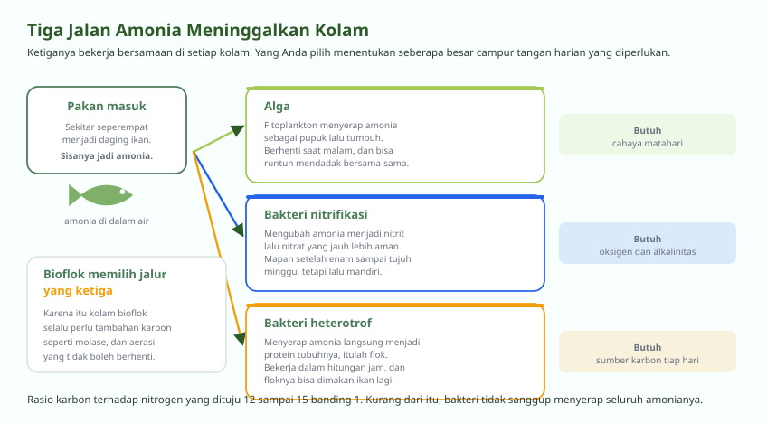

Ke Mana Perginya Nitrogen dari Pakan
Hanya seperempatnya menjadi daging ikan
Pelet yang Anda tebar mengandung protein, dan protein mengandung nitrogen. Ikan hanya menyimpan sekitar seperempat sampai sepertiga nitrogen itu menjadi daging. Sisanya keluar sebagai amonia lewat insang dan kotoran, lalu tinggal di dalam air.
Di kolam tanah luas, alam mengurus sisanya. Di kolam terpal padat tebar tinggi, Anda yang harus mengurusnya. Ada tiga jalan yang bisa dipilih, dan bioflok adalah salah satunya.

| Jalur | Pelakunya | Kecepatan | Yang dibutuhkan | Kelemahan |
|---|---|---|---|---|
| Alga (fotoautotrof) | Fitoplankton | Sedang | Cahaya matahari | Berhenti di malam hari, mudah runtuh mendadak |
| Nitrifikasi (autotrof) | Bakteri nitrifikasi | Lambat, mapan setelah 6 sampai 7 minggu | Oksigen dan alkalinitas tinggi | Butuh waktu lama untuk terbentuk |
| Bioflok (heterotrof) | Bakteri heterotrof | Cepat, hitungan jam | Sumber karbon dan aerasi kuat | Perlu penambahan karbon setiap hari |
Menghitung Karbon yang Harus Ditambahkan
Bagian yang paling sering dikira-kira, padahal ada rumusnya
Bakteri heterotrof memerlukan karbon dan nitrogen dalam perbandingan tertentu untuk tumbuh. Kalau karbon di dalam air kurang, mereka tidak bisa menyerap amonia sebanyak yang Anda harapkan. Perbandingan yang dituju biasanya 12 sampai 15 banding 1.
Rumusnya sederhana. Karbohidrat yang perlu ditambahkan sama dengan jumlah nitrogen yang masuk dikalikan rasio C:N yang dituju, lalu dibagi kadar karbon sumber karbonnya.
| Sumber karbon | Kadar karbon | Catatan pemakaian |
|---|---|---|
| Molase (tetes tebu) | Sekitar 22 persen | Paling murah dan paling lazim, larut cepat |
| Gula pasir | Sekitar 31 persen | Bersih dan mudah ditakar, tetapi lebih mahal |
| Tepung tapioka | Sekitar 46 persen | Perlu dilarutkan dulu, kerjanya lebih lambat |
| Dedak halus | Bervariasi | Murah tetapi kadarnya tidak seragam, menambah padatan |
Contoh hitungan yang bisa Anda tiru
-
Hitung nitrogen yang masuk lewat pakan
Misalnya Anda memberi 10 kg pakan berprotein 30 persen. Protein mengandung sekitar 16 persen nitrogen, jadi nitrogen yang masuk adalah 10 kg dikali 0,30 dikali 0,16, yaitu 0,48 kg atau 480 gram.
-
Kurangi bagian yang menjadi daging ikan
Sekitar 25 persen tersimpan di tubuh ikan. Nitrogen yang benar-benar masuk ke air sekitar 75 persen, yaitu 360 gram.
-
Kalikan rasio C:N yang dituju
Dengan sasaran 15 banding 1, karbon yang dibutuhkan adalah 360 gram dikali 15, yaitu 5.400 gram karbon.
-
Bagi dengan kadar karbon sumbernya
Kalau memakai molase berkadar karbon 22 persen, molase yang dibutuhkan adalah 5.400 dibagi 0,22, yaitu sekitar 24,5 kg. Angka ini untuk membangun flok dari nol.
-
Untuk pemeliharaan harian, pakai patokan yang lebih ringkas
Setelah flok terbentuk, sebagian besar pembudidaya cukup memberi 0,5 sampai 1 kg sumber karbon untuk setiap 1 kg tambahan pakan. Ukur volume flok dan amonia, lalu sesuaikan dari situ.
Menyiapkan Kolam dari Nol
Sepuluh hari yang menentukan sisa siklusnya
-
Hari 1, isi air dan endapkan
Isi kolam, jalankan aerasi penuh, dan biarkan dua sampai tiga hari agar kaporit menguap dan suhu air menyamai lingkungan.
-
Hari 3, naikkan alkalinitas
Ukur alkalinitas. Kalau di bawah 100 mg/L CaCO3, tambahkan kapur pertanian atau dolomit sampai masuk rentang 100 sampai 150. Ini pondasi yang menentukan apakah bakteri mau tumbuh.
-
Hari 3, masukkan probiotik dan sumber karbon
Tambahkan probiotik sesuai anjuran kemasannya bersama molase. Sebagian pembudidaya juga menambahkan sedikit pakan sebagai sumber nitrogen awal, supaya bakteri punya bahan untuk dimakan sebelum ikan masuk.
-
Hari 4 sampai 9, biarkan bakteri berkembang
Aerasi jalan terus tanpa henti. Air akan berubah dari bening menjadi keruh kecokelatan. Tambahkan molase sedikit setiap hari, jangan sekaligus.
-
Hari 7 sampai 10, uji kesiapan air
Endapkan air dalam gelas Imhoff selama dua puluh menit. Volume flok yang terbaca 20 sampai 40 ml per liter menandakan kolam siap. Pastikan juga amonia dan nitrit sudah rendah dan pH stabil.
-
Baru tebar benih
Menebar sebelum flok terbentuk berarti ikan Anda yang menanggung amonia selama bakteri masih membangun diri. Inilah kesalahan paling mahal yang paling sering terjadi.
Merawat Flok Sepanjang Siklus
Flok yang terlalu pekat sama merepotkannya dengan yang terlalu tipis
| Volume flok | Artinya | Tindakan |
|---|---|---|
| Di bawah 10 ml/L | Flok belum cukup, amonia berisiko naik | Tambah sumber karbon dan probiotik, periksa aerasi |
| 20 sampai 40 ml/L | Sehat, pertahankan | Lanjutkan pemberian karbon mengikuti jumlah pakan |
| 40 sampai 50 ml/L | Mulai berat, awasi oksigen | Kurangi karbon, siapkan penyifonan |
| Di atas 50 ml/L | Terlalu pekat, oksigen terancam | Sifon endapan dasar, buang sebagian air, ganti dengan air bersih |
Endapan yang menumpuk di dasar adalah flok mati. Ia tidak lagi menyerap amonia, tetapi tetap memakan oksigen saat terurai. Karena itu penyifonan berkala lewat pipa pembuangan sentral bukan pekerjaan tambahan, melainkan bagian dari perawatan.
Kalau Anda ingin menghitung volume kolam, jumlah benih yang muat, kebutuhan pakan, dan perkiraan panen sekaligus, kalkulator kolam bioflok kami mengerjakan semuanya dari ukuran kolam yang Anda masukkan.
Pertanyaan Seputar Modul Ini
Yang paling sering ditanyakan peserta
Berapa dosis molase untuk kolam bioflok?
Untuk membangun flok dari nol, hitung dari nitrogen yang masuk. Pakan 10 kg berprotein 30 persen membawa sekitar 480 gram nitrogen, sekitar 360 gram di antaranya masuk ke air. Dengan sasaran rasio C:N 15 banding 1, karbon yang dibutuhkan 5.400 gram, dan karena molase berkadar karbon sekitar 22 persen, molase yang diperlukan sekitar 24,5 kg.
Untuk pemeliharaan harian setelah flok terbentuk, patokan yang lebih praktis adalah 0,5 sampai 1 kg sumber karbon untuk setiap 1 kg tambahan pakan. Sesuaikan dari hasil ukur volume flok dan amonia, bukan dari hitungan di atas kertas saja.
Apa itu flok dalam bioflok?
Flok adalah gumpalan hidup berisi bakteri, alga kecil, protozoa, dan sisa bahan organik yang menempel jadi satu. Ia terbentuk ketika bakteri heterotrof diberi cukup karbon, lalu menyerap amonia dari air dan mengubahnya menjadi protein tubuhnya sendiri.
Manfaatnya dua sekaligus. Air menjadi bersih dari amonia, dan flok itu sendiri bisa dimakan kembali oleh ikan sebagai pakan tambahan. Volume sehatnya 20 sampai 40 mililiter per liter, diukur dengan gelas Imhoff setelah diendapkan dua puluh menit.
Berapa lama kolam bioflok siap ditebar benih?
Tujuh sampai sepuluh hari setelah probiotik dan sumber karbon dimasukkan, dengan aerasi berjalan tanpa henti. Tandanya air berubah cokelat susu dan volume flok terbaca 20 sampai 40 mililiter per liter di gelas Imhoff.
Jangan menebar sebelum itu. Kalau benih masuk saat flok belum terbentuk, ikanlah yang menanggung amonia selama bakteri masih membangun diri. Ini kesalahan paling mahal yang paling sering terjadi pada pemula.
Apa bedanya bakteri nitrifikasi dan bakteri heterotrof?
Bakteri nitrifikasi mengubah amonia menjadi nitrit lalu nitrat. Kerjanya lambat dan butuh enam sampai tujuh minggu untuk benar-benar mapan, tetapi setelah jalan ia tidak memerlukan tambahan apa pun selain oksigen dan alkalinitas.
Bakteri heterotrof menyerap amonia langsung menjadi protein tubuhnya. Kerjanya jauh lebih cepat, hitungan jam, tetapi menuntut penambahan sumber karbon terus-menerus dan aerasi yang kuat. Bioflok bertumpu pada jalur kedua ini.
Kenapa air kolam bioflok saya berbusa tebal?
Busa halus berwarna putih atau kecokelatan yang bertahan lama menandakan protein terlarut menumpuk, biasanya karena pakan berlebih atau flok sudah terlalu tua dan mulai pecah.
Kurangi pakan satu sampai dua hari, sifon endapan lewat pipa sentral, dan tambahkan sedikit sumber karbon. Periksa juga volume flok, karena busa tebal hampir selalu datang bersama flok di atas 50 mililiter per liter. Busa kasar bergelembung besar yang langsung pecah hanya efek aerasi dan tidak berbahaya.
Seluruh modul boleh dibaca berurutan atau melompat sesuai kebutuhan. Lihat daftar pelatihan budidaya ikan, atau semua jalur pelatihan.